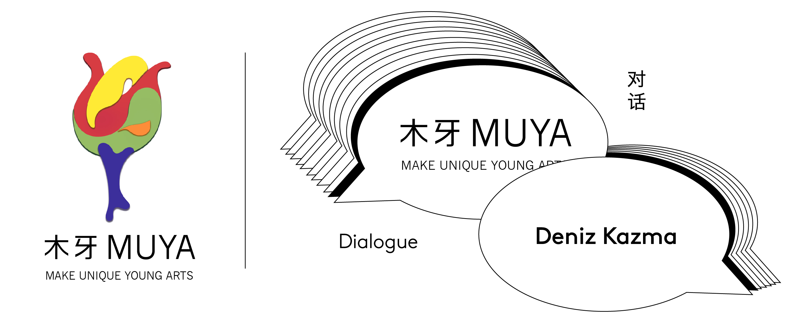
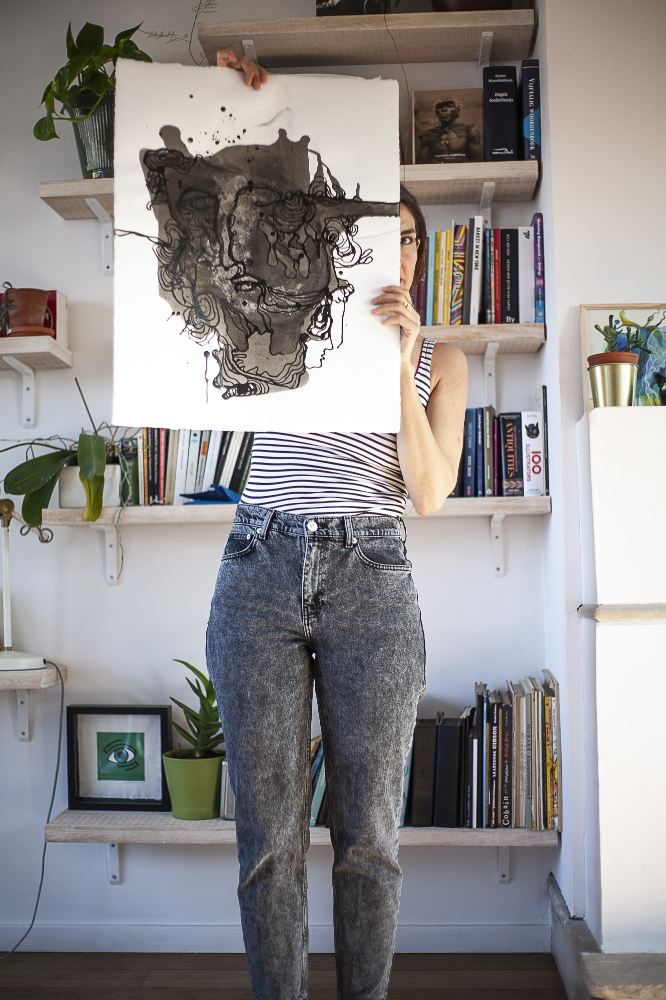
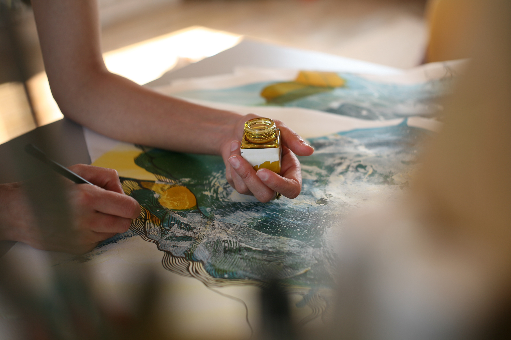
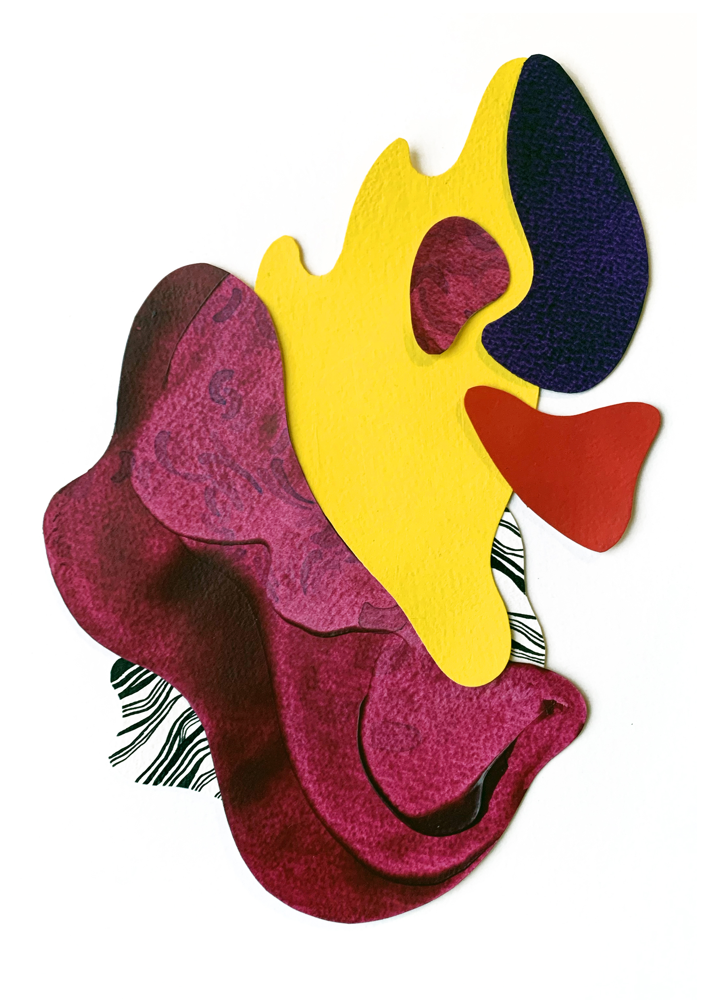
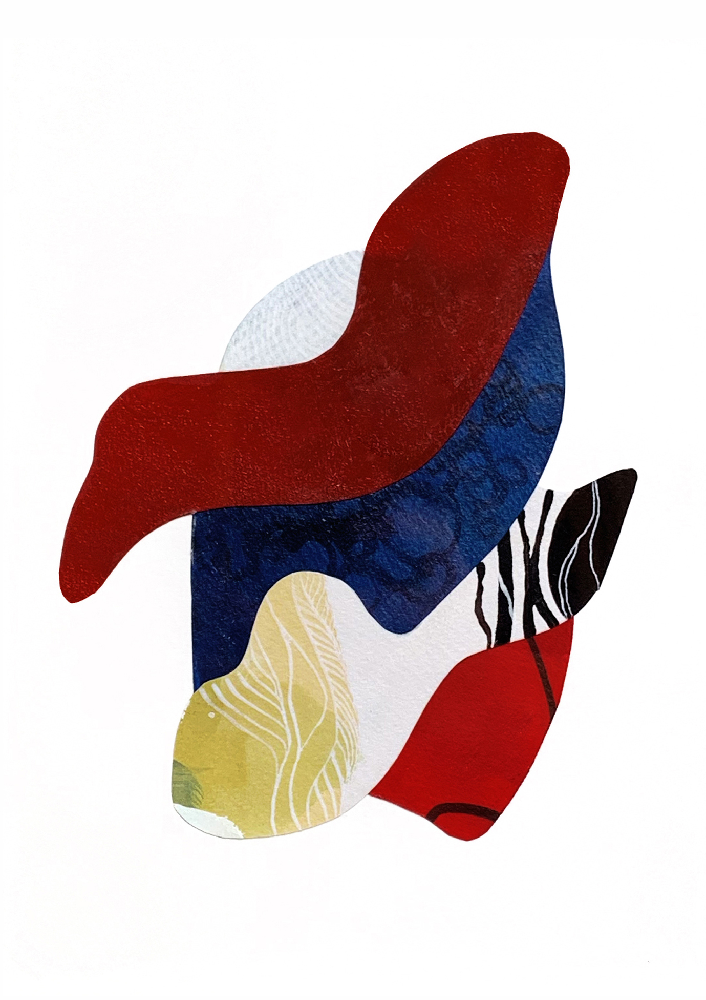
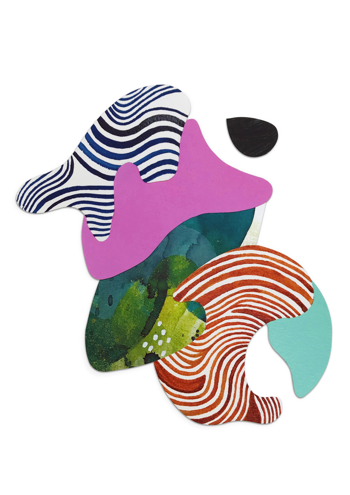
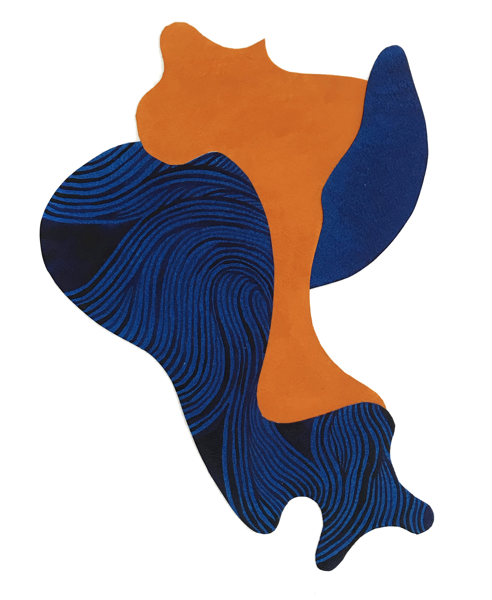
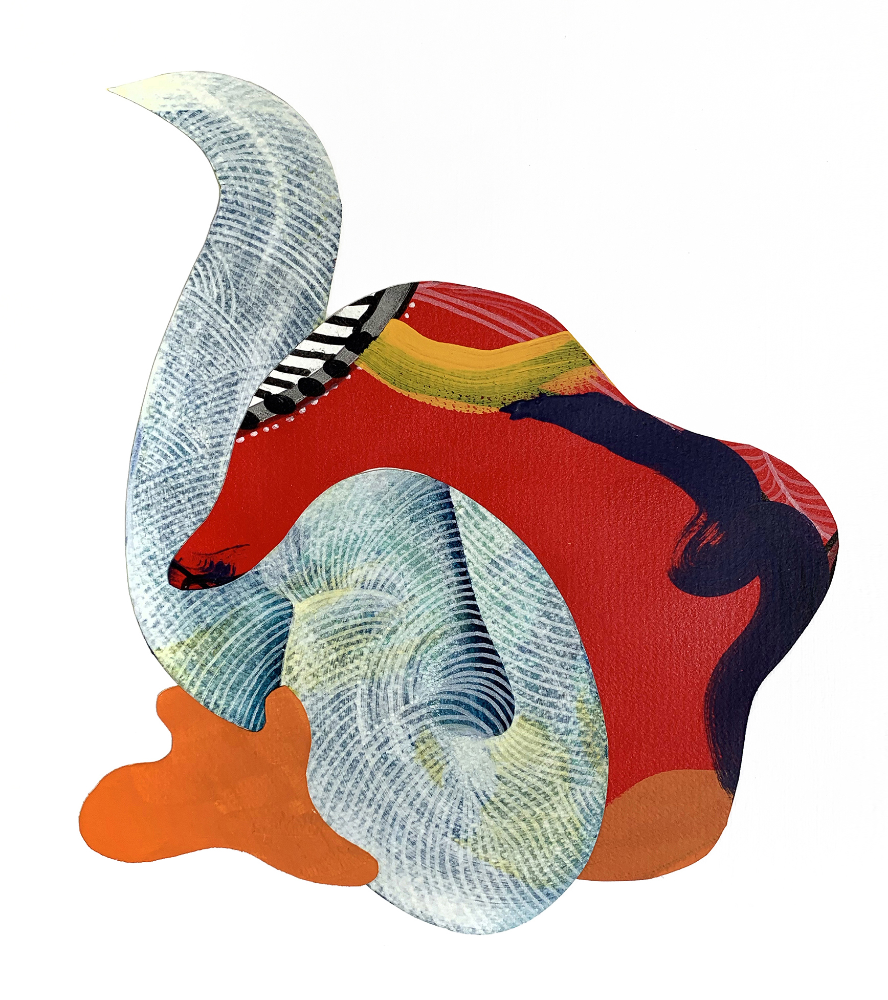
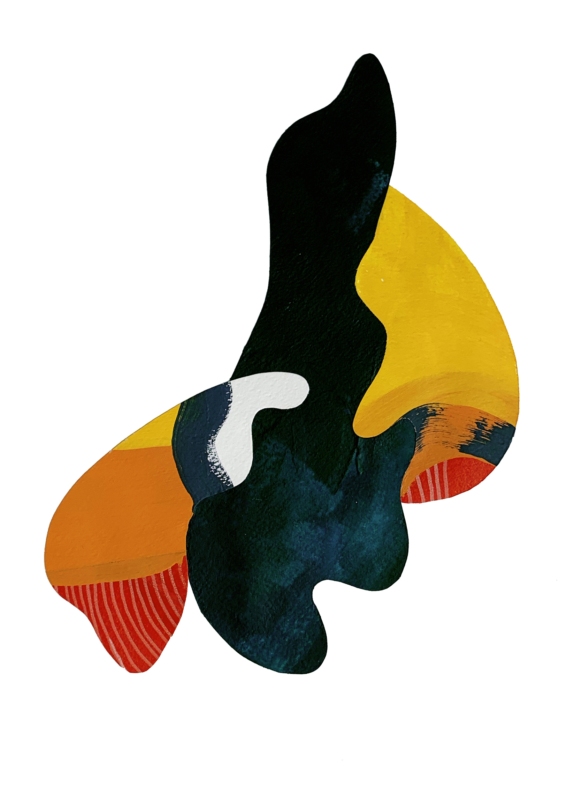
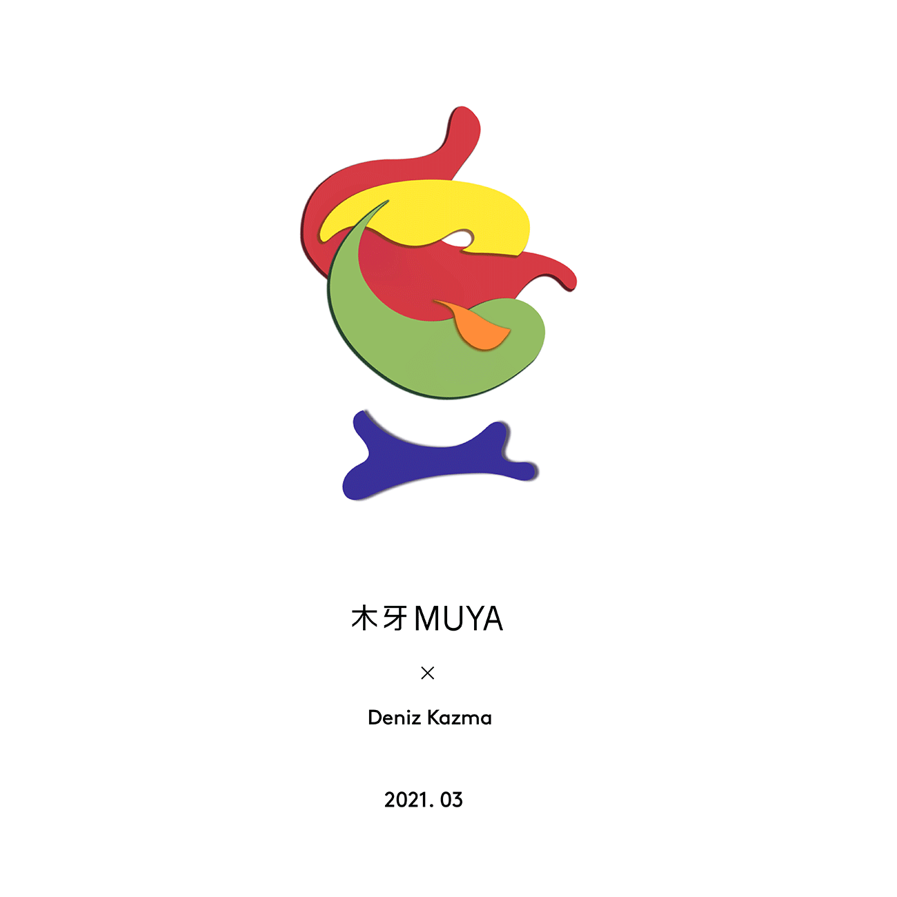

重叠交错的平面与潜意识 | Deniz Kazma 「艺术访谈」
欢迎来到木牙Make Unique Young Arts，让我们来了解艺术创作的过程和找寻最终的形式～
我们所生活的环境铸就了我们部分潜意识的思考。在生活中我们会不由自主的将这样的意识展现在方方面面。
The environment we live in shapes part of our subconscious thinking. We can't help but show this awareness in every aspect of our lives.
儿时的理想也有着相同的作用，成长后的我们也许忘记了为何那时的我们怀揣着成为某种人，某个职业，某种规划的想法。但那时的决定潜移默化的投放在了现在的生活中。
Childhood dreams also play a role. As we grow up, we may forget why we wanted to be a certain person, a certain profession, and a certain plan. But the decisions made at that time are reflected in our lives today.
艺术家在制作的过程中也将这样的情愫和意识带入了作品制作的过程中。今天我们邀请了 Deniz Kazma 来到木牙MUYA和我们一起分享她的创作过程，生活和经历是如何影响到她的作品概念以及设计方向的～
In the process of production, the artist also brings such feelings and consciousness into the process of production. Today we have invited Deniz Kazma to Muya to share with us her creative process, how life and experience have influenced her concept of work and design direction.

Deniz Kazma是一位居住在布鲁塞尔的土耳其、比利时艺术家。她在伊斯坦布尔获得了平面设计的艺术硕士学位，作为一个设计专业人员工作多年的这种经历帮助她利用她的直觉和发展她作为自学艺术家的技能。
Deniz Kazma is a Turkish, Belgian artist based in Brussels. She received her MFA in graphic design in Istanbul, this training and being able to work as a design professional for many years helped her use her intuitions and develop her skills as a self-taught artist.
Deniz在不同的国家旅行，在不同的城市生活，以培养她的风格和丰富她的想象力。她在比利时、土耳其和阿根廷参加了多个群展，并与多位艺术家、设计师和品牌合作。目前，她在布鲁塞尔的家庭工作室工作。
Deniz travelled a lot on different continents and lived in different cities to cultivate her style and feed her imagination. She took part in several group exhibitions and collaborated with various artists, designers and brands in Belgium, Turkey and Argentina. Currently, she is working from her home-studio based in Brussels.


我出生并成长在历史悠久、层次丰富的伊斯坦布尔。一个不断影响我的作品和创作方法的城市。我是兼收并蓄的，我思考了很多关于身份和身份形成的问题。我用各种材料和制作过程来传达我作品中的故事。
I was born and raised in a historical and layered city, Istanbul. A city that constantly affects my work and my method of creating my work. I am owning being eclectic and I contemplate a lot about the identity and the formation of identity. I use a variety of materials and processes to convey the stories in my works.
大多数时候，作品在其存在的过程中有不同的阶段/身份，而创作的步骤与人类的本性是平行的，人类经历了几个阶段，有时是为了找到最终的形式，有时只是因为“过程”就是作品本身。
Most of the time the artwork has different stages/identities during its existence and the creative steps are parallel to human nature, which undergoes several stages sometimes in order to find its final form or sometimes just because the “process” is the work itself.



➤ 木牙MUYA: Deniz Kazma 的作品中有许多分层，如果让你用阶段，材料和颜色来分类你的人生你会如何来制作？
There are many layers in Deniz Kazma's work. If you were to classify your life by stage, material and color, how would you make it?
Deniz Kazma: 我认为我的绘画和雕塑都带有平面设计师的身份，而在我的委托设计作品中也是如此。我努力让我的作品有成长的空间，使其充满信心，并在此过程中逐渐成熟。我目前的作品特别以过程为导向。我对表达性不感兴趣。我喜欢挑战材料的极限。从技术上讲，当工具、材料和/或平面工作顺利时，我倾向于破坏或推动它达到物理极限，看看还会发生什么。我的很多作品都是对自然元素的抽象。
I think I carry the graphic designer identity on my paintings and sculptures and vice versa on my commissioned design works. I try to allow space for growth in my work, that it has its confidence, maturing in the process. My current works are especially process-oriented.
I’m not interested in expression. I enjoy forcing the limits of the material. Technically, when the tool, the material and/or the surface works smoothly I tend to disrupt or push it to its physical limits to see what else can happen. A large number of my works are abstractions of natural elements.


➤ 木牙MUYA: Deniz Kazma 对自己作品展示的方式什么想法吗？作品应用在什么样的场景中？在平时的创作过程中会开始筹划吗？
Does Deniz Kazma have any thoughts for your work displayed? What kind of scene is the work applied to? Will you start planning it during the usual creative process?
Deniz Kazma: 作为一名设计师，我对展品非常感兴趣。有时我的一些作品会随着展示的方式而不断改变他们的身份，在我探索展示方式的过程中，就像是我的作品会作为一种身体的延展或者是面具。它们最初是我拼贴画的一部分。在某种程度上，我决定它们应该在人体上展示。我爱人类的身体和它的功能性。我仍然还在做这个项目，想在服装设计和绘画之间找到一个很好的平衡。我想将它们保持绘画作品的状态。
As a designer, I am pretty much interested in displays. Sometimes some of my works change their identity along the way, as I search for display, like my work on body extensions or masks. They were initially part of my collage paintings. At some point, I decided that they should be displayed on human. I love the human body and its capacities. I am still working on this project to find a nice balance between costume design and painting. I want them to stay as painting pieces.

➤ 木牙MUYA:在Deniz Kazma 的作品中分层的图形都是没有棱角的是带有弧度的像液体一般，是有什么特殊的意义吗？
In Deniz Kazma's work, the layered graphics are all without edges and corners, and curved like liquid. Does it have any special meaning?
Deniz Kazma: 当我很小的时候，出于某种奇怪的原因，我想成为一名海洋生物学家，我不记得为什么了。但它仍然主宰着我的梦想，并影响着我大部分的童年记忆。我一直好奇水的记忆，它的能量和能力，以及它在古今文化中的象征意义。在不同的文化中，水有着美丽的神话。它是色情的，强大的，脆弱的，还有更多。这是我的缪斯女神。我让它指导形状。
When I was a very small kid, for some odd reason I wanted to become an ocean biologist, I cannot recall why. But it still dominates my dreams and taints most of my childhood memories. I am always curious about the memory of water, its energy and ability and its symbolism in ancient and contemporary cultures. Water has beautiful mythologies in different cultures. It is erotic, powerful, fragile and so much more. It’s my muse. I let it direct the shapes.

➤ 木牙MUYA:Deniz Kazma 作为平面设计师，平时是如何支撑自己的艺术生涯的？工作或者是售卖自己的作品？具体是什么工作？如果售卖的话在哪？
As a graphic designer, how does Deniz Kazma support art careers? Work or sell your own work? If work, What kind of job are you doing? If selling work, how?
Deniz Kazma:我兼职为不同的客户做平面设计师和插画师，我喜欢在我的职业生活中解决问题和迎接挑战。在余下的时间里，我正在学习艺术史和创意写作。我同时在自己的家庭工作室进行创作和实验。有时我会通过画廊和在线艺术平台出售一些艺术品。
I work part-time as a graphic designer and illustrator for various clients, I enjoy problem-solving and having this challenge in my professional life. For the rest of my time, I am studying art history and creative writing. I simultaneously create and experiment in my home studio. Sometimes, I sell some of my artworks through galleries and online art platforms.

➤ 木牙MUYA:在当下社交媒体应用的时代，Deniz Kazma是如何通过这些社交媒体来推广自己的作品的呢？或者是有什么方式很好的推广自己的作品的呢？
In the current era of social media applications, how does Deniz Kazma use these social media to promote your work? Or is there a good way to promote your work?
Deniz Kazma:在网上露面很重要，而且看起来你可以用它做任何事情。但我也发现放弃现实是危险的，这会扼杀我们的灵魂、真诚、生产力和现实感。为了我的客户，我不得不在这些平台上花费大量时间，但我认为我并没有有效地利用它们来进行自己的推广或沟通。
It’s important to have online presence, and it seems like you can do anything with it. But I also find it dangerous to give up on our reality, this kills our soul, sincerity, productivity, sense of present. I have to spend quite a lot of time on these platforms for my clients but I do not think I am using them efficiently for my own promotion or communication.

➤ 木牙MUYA:在Deniz Kazma 的作品，有一种融合和律动感，我们有看到，部分作品的展示上与人体（例如手臂，头部等）相结合，这种律动感和人体的结合的意义是怎样的？
In Deniz Kazma's work, there is a sense of integration and rhythm, and we see that some of the works are presented in connection with the human body, such as the arms, the head, etc. What is the meaning of this combination of rhythm and the human body?
Deniz Kazma:大多数时候，当我有了一个想法，我就让它以自然的物理形式存在于我现在的职业中。但在这个例子中，兴趣作为一种想法进入了身体。当时，我读了很多关于超人类主义和身体进化的书。 我想看看如果延展或代替的部分也会是艺术品会是什么样子。自发地，我在为我的剪纸拼贴作品寻找一个展示方案。人体具有完美的速度和作为一个移动展示的灵活性，我们可以在一些部落或古代的服装或表演艺术中观察到。
Most of the time when I have an idea, I let it take its natural physical form with my current occupation. But in this case, the interest came into body as an idea. At the time, I was reading a lot about transhumanism and body upgrading. I wanted to see how it would be like if the extensions or the replacements were indeed artworks. Spontaneously, I was looking for a display solution for my cut-out collage works. The human body has the perfect speed and flexibility as a moving display, which we can observe in some tribal or ancient costumes or performing arts.

➤ 木牙MUYA:当Deniz Kazma 的作品被带在头部或是与人物面颊结合，是非常美的，有想过将作品延伸为一种首饰或是配饰上的设计嘛？
When Deniz Kazma's work is worn on the head or combined with the face of the character, it is very beautiful. Have you ever thought of extending the work as a design for jewelry or accessories?
Deniz Kazma:我制作了一些配饰，还做过舞台服装。将来，我真的很想做舞蹈服装。关于珠宝设计，我认为这只有通过合作才能实现。
I have created some accessories and I worked on stage costumes. In the future, I really want to work on dance costumes. About jewellery design, I think this can only be possible as a collaboration.

➤ 木牙MUYA:有看到Deniz Kazma的作品尝试着使用材料进行展示（例如木质），切割的方式是激光切割嘛？在尝试不同材料的时候，觉得和绘制出来的肌理，或是展示出来的效果，有什么不同？为作品增加了怎样不同的色彩？
Did you see Deniz Kazma's work attempt to use materials (such as wood) for presentation? Was the cutting done by laser cutting? When trying different materials, how do you feel different from the texture drawn or the effect displayed? How to add different colors to the work?
Deniz Kazma:在木头上作画比在纸上作画要慢得多。纸上的水是即兴创作的，木刻是预演的。我使用激光切割系统切割出我的木制雕塑的碎片。我用手在表面雕刻纹理和线条。我喜欢木材和它的衍生产品纸张，我喜欢在创作视觉词汇时感受这些材料的阻力或开放性。 木雕只是另一个步骤，就像纸上的丙烯酸或油墨纹理，作为拼贴作品的这些纹理的切面作品，可穿戴的绘画或这些作品的摄影作品一样。我希望我的作品具有不同的生命周期/身体载体——所以从根本上说，同一个灵魂在不同的身体中。
Working on wood is a slower process than working on paper. Water on paper is improvisation, woodcuts are rehearsed. I use a laser cutting system to cut out the pieces for my wooden sculptures. I carve the textures, lines on the surface by hand. I love wood and its derived product, paper, and I love to feel the resistance or openness in these materials while working on the visual lexicon. The wood sculptures are just another step, like the acrylic or ink textures on paper, the cut-out pieces of these textures as collage works, the wearable paintings or the photography of these compositions. I want my artwork to have different lifetimes – or bodies – so fundamentally, the same soul in a different body.

✯ Which inspire your works most ✯
“We know that the universe is infinite, expanding and strangely complete, that it lacks nothing we need, but in spite of that knowledge, the tragic paradigm of human life is lack, loss, finality, a primitive doomsaying that has not been repealed by technology or medical science. The arts stand in the way of this doomsaying. Art objects. The nouns become an active force, not a collector's item. Art objects.”
by Jeanette Winterson, Art Objects: Essays on Ecstasy and Effrontery


木牙微信订阅号